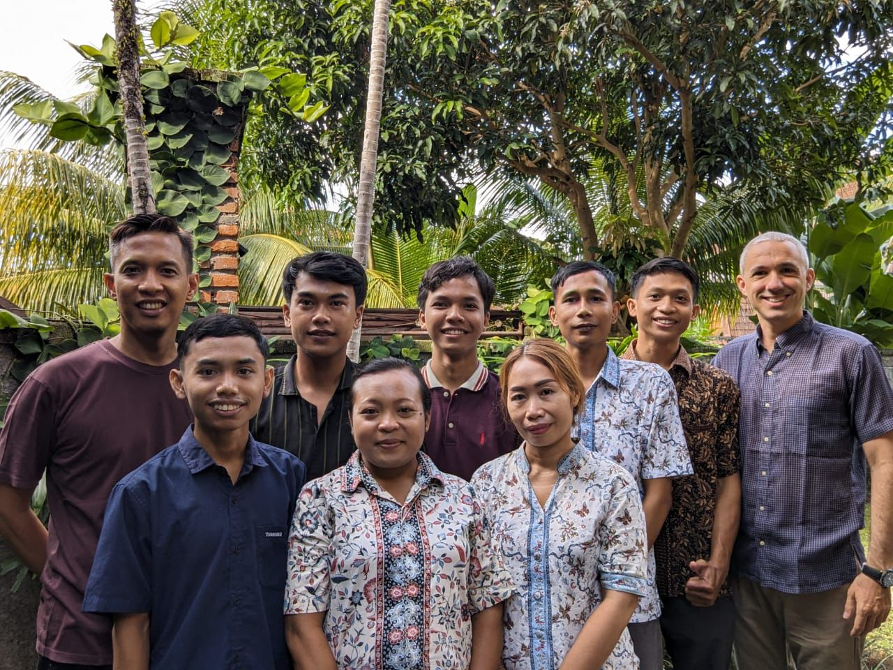
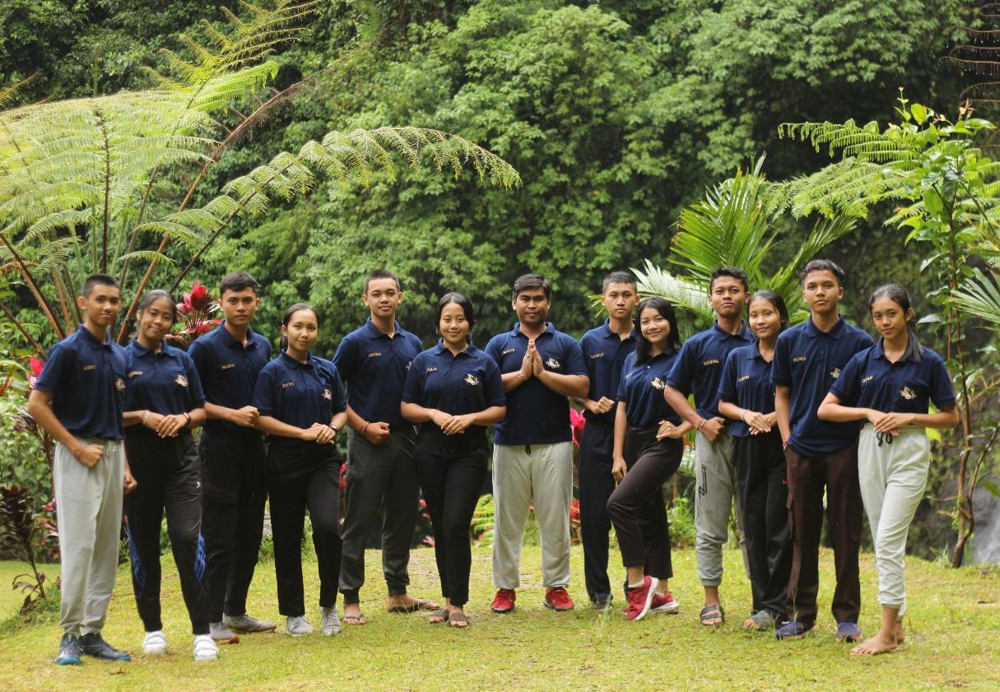
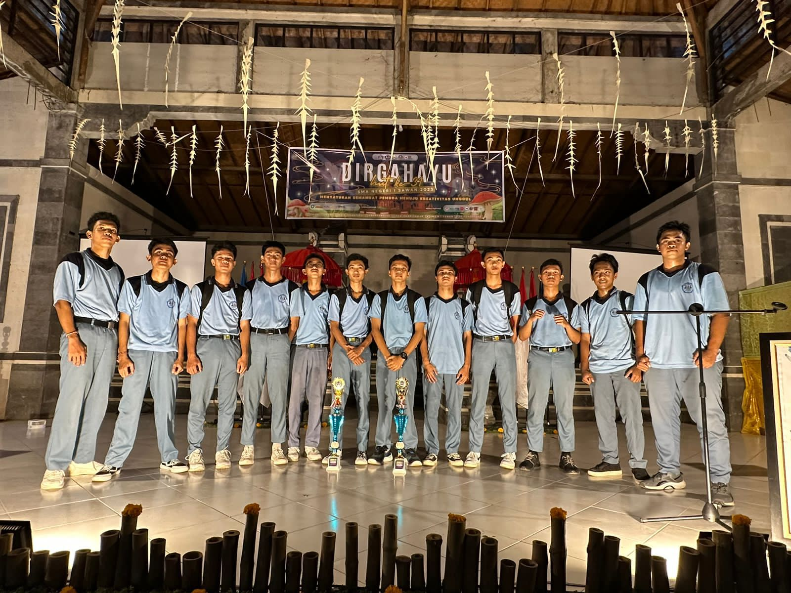

Selamat Datang di Portofolio Saya
Saya adalah Suniaramana Mardana Putra, mahasiswa Program Studi Teknologi Rekayasa Perangkat Lunak. Saya memiliki minat dalam bidang pemrograman, desain grafis dan videografi. Selama perkuliahan, saya terbiasa mengerjakan proyek individu maupun tim yang melatih skill serta kerja sama.
Lihat Galeri SayaTentang Saya

Saya adalah seorang mahasiswa/profesional yang tertarik pada dunia pengembangan web. Saya memiliki keahlian dalam HTML, CSS, dan JavaScript, serta pengalaman dalam menggunakan framework modern seperti Tailwind CSS. Saya sangat menikmati proses mengubah ide menjadi produk digital yang fungsional dan estetis.
Selain coding, saya suka belajar hal-hal baru, membaca buku, dan bermain game. Saya selalu mencari tantangan baru dan peluang untuk berkembang.
Galeri

Organisasi
Sebagai Wakil Ketua UKM Catur, saya dipercaya menjadi Korma TRPL, sejak SMK saya sudah aktif mengikuti kegiatan.
Lihat Detail
Prestasi
Saya berprestasi dalam bidang non-akademik sejak SD hingga sekarang, saya meraih 5 medali dalam ajang PORPROV.
Lihat Detail
Detail Organisasi


Saya aktif dalam berbagai organisasi sejak SMK hingga kuliah. Saat ini, saya mengikuti UKM Catur dan dipercaya sebagai Wakil Ketua Umum, serta di HMJ Teknik Informatika saya menjabat sebagai Koordinator Mahasiswa TRPL. Pada masa SMK, saya juga aktif di organisasi Jegeg Bagus, Majelis Perwakilan Kelas (MPK), dan Pramuka. Melalui pengalaman tersebut, saya banyak belajar mengenai kepemimpinan, manajemen kegiatan, kerja sama tim, serta kemampuan komunikasi yang terus saya kembangkan hingga saat ini.
Kembali ke GaleriDetail Prestasi


Saya berprestasi dalam bidang non-akademik sejak sekolah dasar hingga sekarang. Salah satu pencapaian terbesar saya adalah meraih 5 medali dalam ajang PORPROV. Selain itu, saya juga memiliki prestasi di berbagai bidang lain, seperti juara lomba Microsoft Excel, kompetisi foto dan video kreatif, serta aktif dalam dunia e-sport Mobile Legends, di mana saya bersama tim berhasil mengikuti dan menorehkan hasil baik dalam beberapa turnamen. Rangkaian pengalaman ini membantu saya mengasah kemampuan berpikir kritis, kreativitas, serta kerja sama tim, yang mendukung perkembangan diri saya baik di bidang akademik maupun non-akademik.
Kembali ke GaleriDetail Internship
Selama masa SMK, saya melaksanakan program internship selama 6 bulan di Ubud pada sebuah perusahaan industri. Saya ditempatkan di tim kreatif, di mana saya terlibat dalam pembuatan konten, pengembangan ide visual, serta mendukung berbagai proyek perusahaan. Melalui pengalaman ini, saya tidak hanya memperoleh keterampilan teknis di bidang desain dan kreativitas, tetapi juga memahami alur kerja profesional dalam lingkungan industri. Sebagai hasil dari program tersebut, saya berhasil memperoleh sertifikat LSP serta sertifikat dari industri, yang menjadi bukti kompetensi dan pencapaian saya selama magang.
Kembali ke GaleriHubungi Saya
Jika Anda tertarik untuk berkolaborasi atau ingin sekadar menyapa, jangan ragu untuk menghubungi saya melalui formulir di bawah ini.